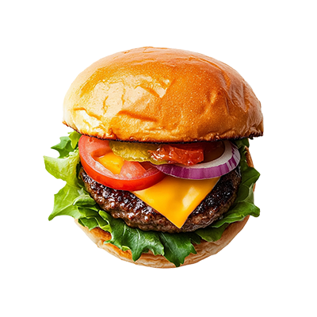
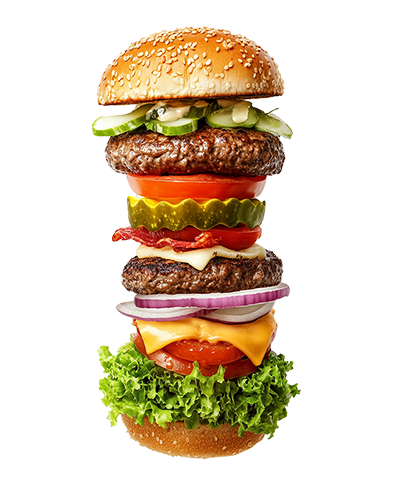

برگرها یکی از غذاهای محبوب و سریع در جهان هستند که ترکیبی از گوشت چرخکرده، نان و مخلفات متنوعی مانند کاهو، گوجهفرنگی و سسهای مختلف را شامل میشود. این غذا میتواند منبع خوبی از پروتئین، آهن و ویتامینهای گروه B باشد.

مواد لازم:
- ۵۰۰ گرم گوشت چرخکرده
- نصف پیمانه پودر سوخاری
- نصف پیاز، ۱ تخممرغ، ۲ حبه سیر
- نمک، فلفل، روغن زیتون
مراحل تهیه:
- در یک ظرف بزرگ، گوشت، پودر سوخاری، پیاز، تخم مرغ، سیر خرد شده، نمک و فلفل را مخلوط کنید.
- با دست مرطوب، مواد را به شکل همبرگر درآورید.
- همبرگرها را در پودر سوخاری بغلتانید.
- روغن زیتون را در تابه داغ کرده و همبرگرها را با شعله ملایم سرخ کنید.
- هر طرف را ۵-۶ دقیقه بپزید تا قهوهای شود.
همبرگر خانگی شما آماده است! آن را همراه با نان، کاهو، گوجه و خیارشور سرو کنید. نوش جان!